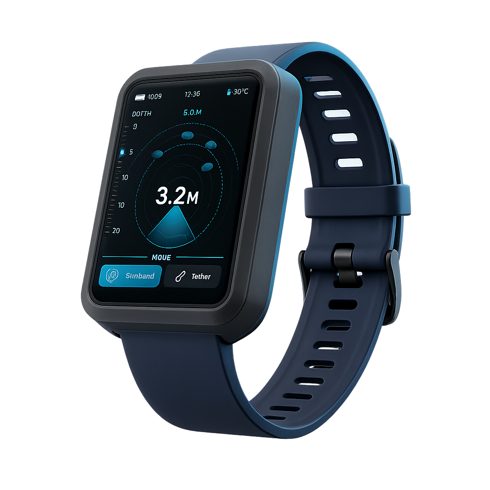
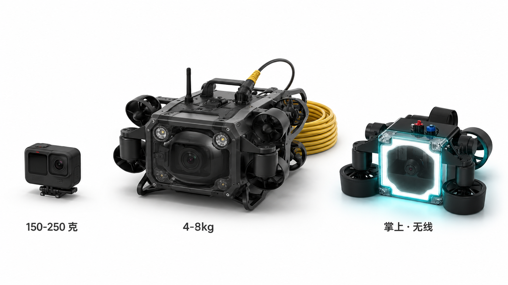

双手被占用
水下摄影者必须同时管理浮力、呼吸节奏、深度计、构图与跟焦——注意力的"工作记忆"被瓜分到 5 件事以上。最终结果通常不是没拍到，而是拍废与隐患同时发生。
Project Remo 是一款无线、掌上起降的水下智能跟随相机。它填补了消费级运动相机与传统有线 ROV 之间的市场空白——让每一位潜水员重新拥有自由的双手与完整的注意力。
水下摄影的难点，
不是"能不能拍"，
而是潜水员，
是否还有余力拍好。
水下摄影者必须同时管理浮力、呼吸节奏、深度计、构图与跟焦——注意力的"工作记忆"被瓜分到 5 件事以上。最终结果通常不是没拍到，而是拍废与隐患同时发生。
传统水下 ROV 是工业巡检工具——脐带线缆、地面控制器、上岸部署流程，让它从未真正属于一次说走就走的旅行潜。重 7–15 kg、起步价 ¥15,000+，"自由"和"ROV"在产品语言上从未相遇。
气泡群、悬浮颗粒、逆光、低照度——任何一种都足以让单纯视觉跟踪丢失目标。水下交互必须尊重"水"这件事本身，而不是把陆地上的视觉假设原样搬下水。
设备入水即解锁，无需按键。基于水压与导通双重判定，避免误启动。
LIVE潜水员佩戴的声学手环通过 DYP-C01B 建立声学链路，Remo 即使在浑浊水域也能保持稳定定位。
LIVE声学定位提供位置先验，视觉追踪进行精构图。当视觉丢失时，声学权重立即接管。
IN-DEV出水自动上锁，磁吸接触式充电，无 USB 接口意味着无密封风险。
LIVERemo 摒弃矢量推进（vectored thruster）方案的复杂调参，采用经过 ROV 工业验证的 5 推进器布局——更易于水动力学建模、控制器收敛与外壳工程化。我们并行验证两套动力路线：策海科技无刷推进器主打海水可靠性，自研有刷方案主打成本可控；二者共享同一套飞控、声学与传感平台。
结构设计目标，当前于泳池 / 浅水验证。
2 水平 + 2 垂直 + 1 横向，稳定优先。
DYP-C01B，相机端 2 + 手环端 1，纠偏定位。
声学辅助视觉、多模态交互、水压辅助密封。
 FIG · 02 — ACOUSTIC LINK · UNDERWATER SCENE
FIG · 02 — ACOUSTIC LINK · UNDERWATER SCENE
Remo 摒弃简单水听器（hydrophone），采用 DYP-C01B 水下声学通信模块——系统部署三个模块，相机端 2 个、潜水员手环端 1 个，两个及以上模块同时在水下即可建立低速率声学链路，进行纠偏定位。当视觉被气泡或悬浮颗粒遮蔽时，声学链路仍然稳定——这是 ROV 工业领域成熟二十年的技术，我们做的，是把它装进掌心，并让它和视觉算法手拉手。
潜水员佩戴的声学手环通过敲击产生特定超声特征，被相机端读取识别，构成低带宽、高鲁棒的指令通道——专为"戴着面镜、戴着手套、说不出话"的环境而生。

水下色彩失真不是滤镜问题——红光在 5 m 几乎完全衰减，绿光在 15 m 大幅衰减，传统白平衡无能为力。Remo 引入基于生成对抗网络（GAN）的水下色彩还原算法，结合 MS5837 深度计与声学距离数据，进行物理级别的色彩校正，并通过云端 AI 剪辑订阅形成持续服务能力——HaaS: Hardware as a Service。

对比数据基于公开消费类产品参数。Remo 数据基于当前 POC 样机实测与结构设计目标。
为每一位会浮潜、会自由潜的人而生。更轻的出行负担、更简单的拍摄流程，让"从潜店借一台 Remo"成为标准动作。
给愿意为画质付费的人准备的水下创作工具。围绕定制影像系统、更长续航与更深潜域，服务专业拍摄与高级潜点。
Lite / Pro 为未来产品线愿景。当前 POC 阶段为单一样机，并行验证有刷与无刷两套动力路线，最终归并为统一产品形态。


以掌上起降、无线跟随和一键成片建立差异化，而不是单纯拼相机参数。让设计与体验成为护城河的第一层。
面向潜店和旅行场景的更低门槛体验入口。对潜店而言，Remo 提高设备周转率与内容转化率；对用户而言，"出国前不必先买相机"。租赁是消费者教育的最佳渠道。
GAN 色彩还原、智能剪辑、潜水日志、成片模板——所有需要算力与素材库的部分都放在云端，形成持续订阅收入。硬件单价波动，HaaS 收入稳定。
声学定位 + 自动巡航 + 避障状态机已跑通；PCB 第 3 轮迭代；正在补齐核心团队。
重点验证稳定跟随、水压辅助密封一致性、可靠起降、续航与可维护性。
用真实水测素材、可量化指标与双产品线叙事启动全球早期用户转化。
围绕产品最难复现的技术节点，进行严密的 FTO 与专利布局，为 EP 与 Kickstarter 阶段建立竞争壁垒。
专利交底书已起草 · FTO 检索 · IN-DEV
气泡 / 浑浊场景下，声学信号平滑修正视觉 ROI 权重，保持稳定锁定与跟随。
声学手环敲击编码 + 震动反馈，构成水下与设备之间的低带宽、高鲁棒交互通道。
利用环境水压增强密封贴合度的机械结构设计，专为消费级潜深与维护性优化。
我们对外只承诺"已验证"，路线则用"进行中 / 规划中"分层标注。以下是面向天使阶段投资人的核心信息。完整 Deck 与 Tech Snapshot 请联系创始团队。
机械、PCB、控制脚本、用户访谈、水测视频均已沉淀。可演示链路：入水自动解锁 → 自动巡航 → 近障避让 → 出水自动上锁。
聚焦稳定跟随闭环、水压辅助密封一致性、连续运行可靠性、续航与可维护性。每一项都有可量化的目标指标。
核心团队补位（嵌入式 / 控制算法 / 结构）、EP 阶段供应链与小批量水测、Kickstarter 视频与传播。每一笔资金对应一个可验证的里程碑。